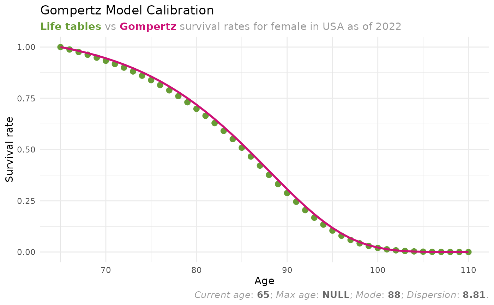

Plotting the results of Gompertz model calibration
Source:R/calc_gompertz.R
plot_gompertz_calibration.RdPlotting the results of Gompertz model calibration
Arguments
- params
A list returned by
calc_gompertz_parameters()function.- mode
A numeric. The mode of the Gompertz model.
- dispersion
A numeric. The dispersion of the Gompertz model.
- max_age
A numeric. The maximum age of the Gompertz model.
Value
A ggplot2::ggplot() object showing the comparison between
actual survival rates from life tables and the fitted Gompertz model.
Examples
mortality_rates <-
dplyr::filter(
life_tables,
country == "USA" &
sex == "female" &
year == 2022
)
params <- calc_gompertz_parameters(
mortality_rates = mortality_rates,
current_age = 65
)
plot_gompertz_calibration(params = params)
